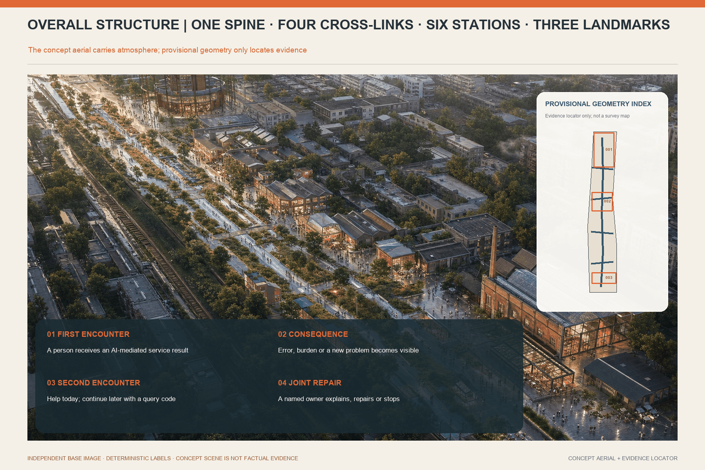
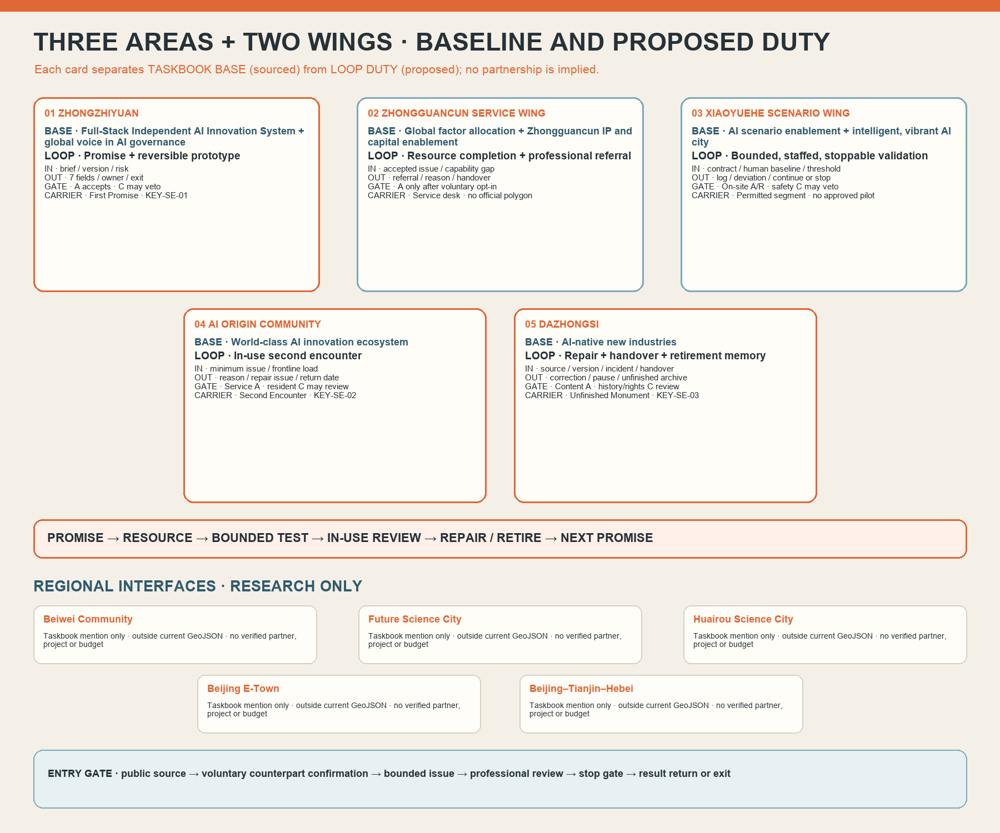
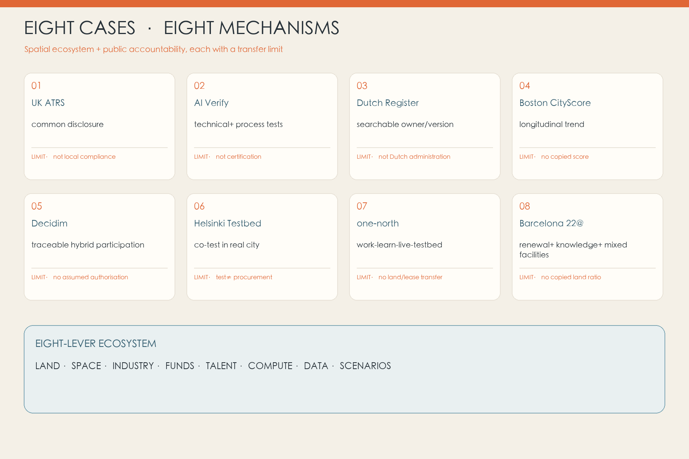
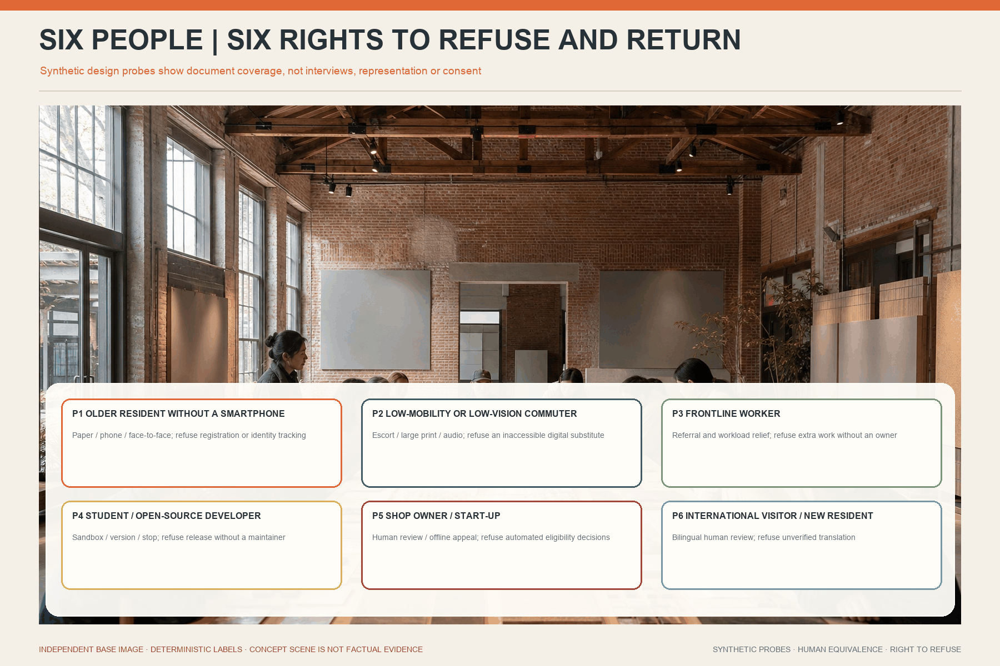
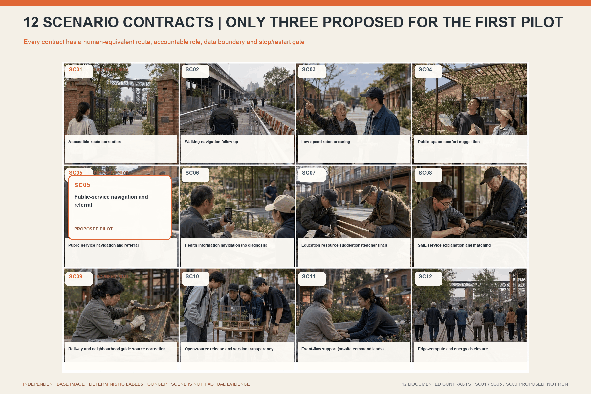
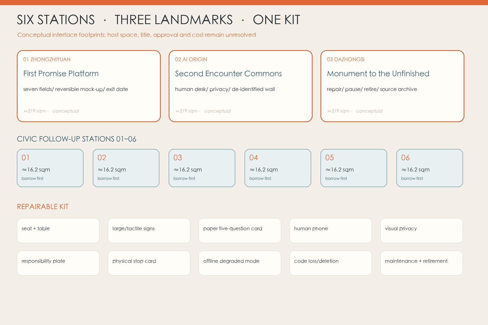
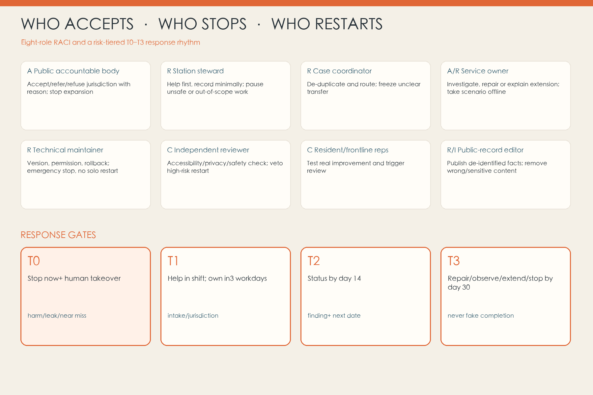

CREATE · ZHONGZHIYUAN
First Promise Platform: purpose, responsibility and exit are declared before public use.
Urban innovation is judged not at launch, but at the second encounter.

First Promise Platform: purpose, responsibility and exit are declared before public use.
Second Encounter Commons: residents and frontline staff bring consequences back.
Monument to the Unfinished: repair, pause and retirement become public memory.
Composite journey—not a real interview. An older resident reaches a road closure after following an accessible route. A steward first draws a route she can use today; no account is required.
Paper map, a chair, and a human answer solve today’s problem first.
A public role accepts the case; name and phone stay blank by default.
The noticeboard and offline page show the first finding.
Publish a change, continued observation, or a stop decision.
3/14/30 is a proposed pilot service target, not a confirmed government commitment.
This index connects the interactive narrative to the full professional package; spatial values come from the same provisional GeoJSON.
The five internal nodes each name an input, output, owner interface, stop gate and carrier. Beiwei Community, Future Science City, Huairou Science City, Beijing E-Town and Beijing–Tianjin–Hebei are outside this phase's geometry and partnership claims: the taskbook names them, but this package has no verified counterpart, project, budget or consent evidence.

Read the full role / input / output / responsibility / carrier and evidence-status tables
The spatial proposal is only credible when the human route, ownership and restart evidence fit the same frame.




